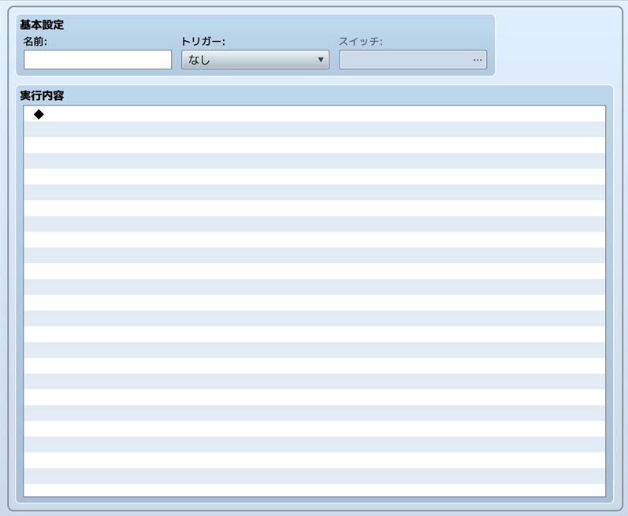

RPG TKOOL MZ HELP
データベース

コモンイベントの設定
データの役割
コモンイベントとは、ゲーム中に任意のタイミングで実行できるイベントのことです。プレイの状況を定期的に監視したり、アイテムやスキルを使用時に何らかの処理を行なうなど、ゲーム全体で汎用的に実行する処理を定義できます。作成したコモンイベントは、［コモンイベント］のイベントコマンドや、特定のスイッチを［ON］にする処理によって実行できます。
設定項目の内容

基本設定
-
名前
コモンイベントの名前です。この名前はエディターのみで使用されます（プレイ中のゲームへの影響はありません）。
-
スイッチ
トリガーに［自動実行］または［並列処理］を指定した場合、処理開始の合図となるスイッチを指定します。同じスイッチを指定したコモンイベントが複数ある場合、ID番号が最も若いもの（リストの上にあるもの）が実行対象になります。
-
トリガー
［実行内容］の処理を開始するタイミングを以下から指定します。なお［自動実行］と［並列処理］はマップ画面を表示中のみ有効です。
- なし
- スキル、アイテム、他のイベントなどから明示的に呼び出されたときのみ処理を開始します。
- 自動実行
- ［スイッチ］に指定したスイッチがONになったときに処理を開始します。
- 並列処理
- ［スイッチ］に指定したスイッチがONになったときに処理を開始し、実行内容の処理を周期的に繰り返します。
実行内容
コモンイベントで実行する処理を、イベントコマンドをもとに設定します。編集方法はマップイベントの［実行内容］と同じです。
自動実行、並列処理のトリガーを使用する場合の注意
トリガーに［自動実行］または［並列処理］に指定したイベントは、［スイッチ］に指定したスイッチの値が［ON］になっている間、［実行内容］の処理が繰り返し行なわれます。
この繰り返し処理を止めるには、条件としているスイッチの値を［OFF］にする措置が必要です。こうした制御を行なわないと、処理の内容によってはプレイヤーが一切操作できなくなる可能性があります。
テストプレイ中に操作不能になった場合は、ゲームのウィンドウを［×］ボタンで閉じるか、［Alt］＋［F4］キーを押して強制終了してください。